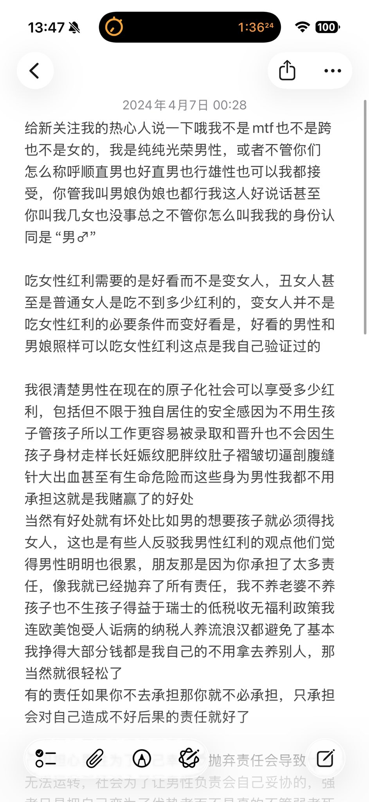
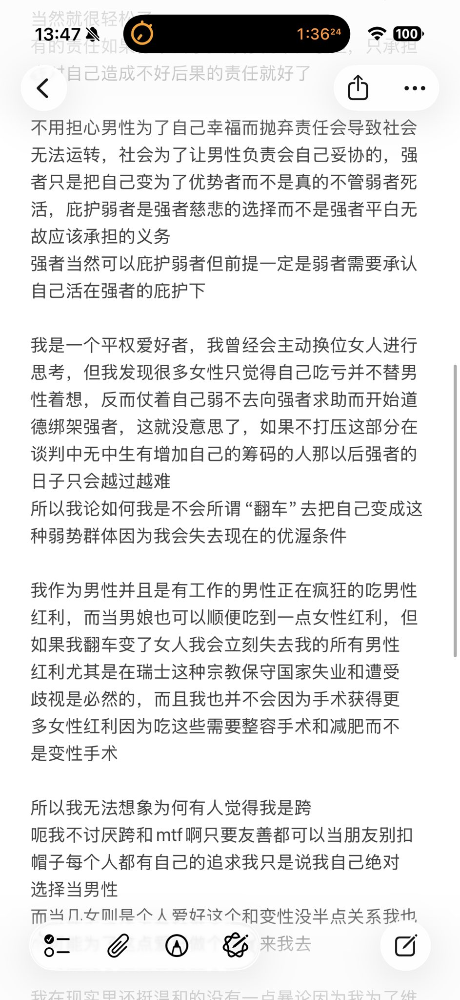
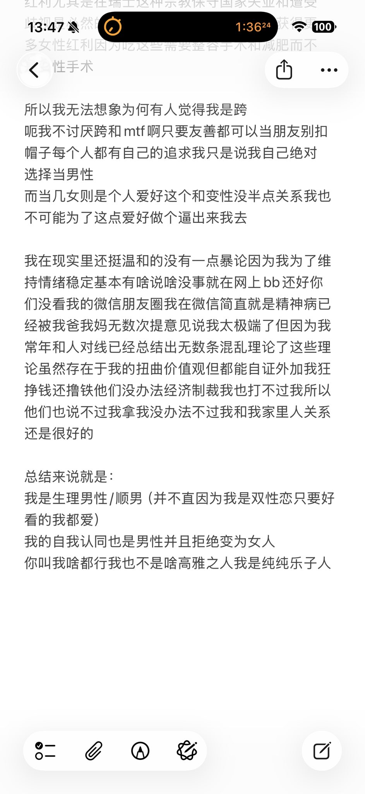

困困鱼崽仔小云
@kunkunyuzaizai
@nande198900 男的不能爱美 很容易被骂



某人的第五个号
@nande198900
有的宝宝，有的，有的优势是很明显的
这是我一年之前总结的为什么我身为男性独生子是老天给我的礼物，虽然我很多观点都改变了但男性优势的大体可以参考：
总之就是想吃到部分女性红利需要的是你好看而不是成为女人，而男性红利则需要你真的是生理男人 https://t.co/8blD4DLuoW https://t.co/E9NIG2sckw